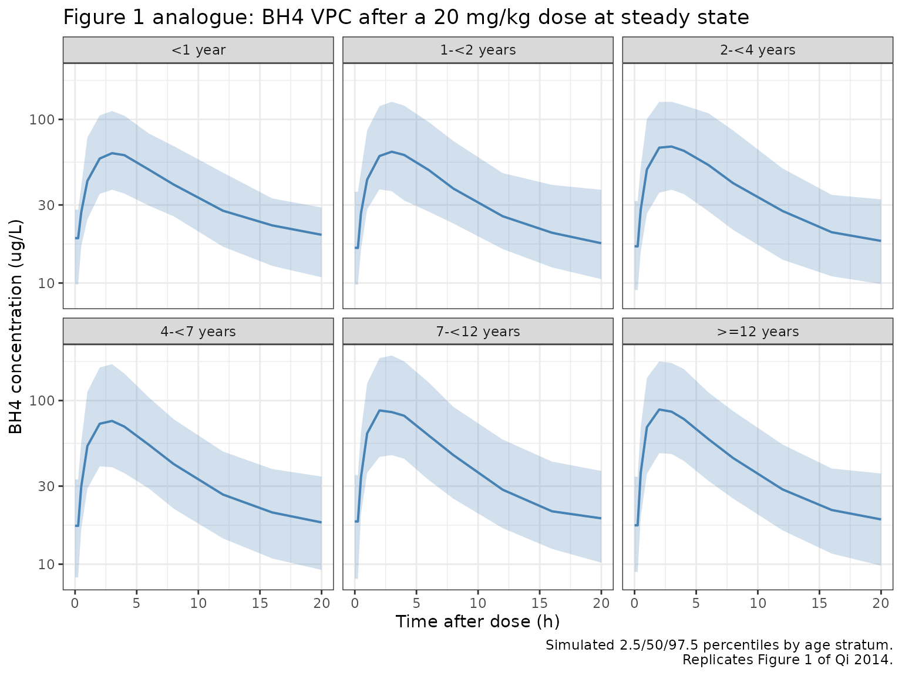
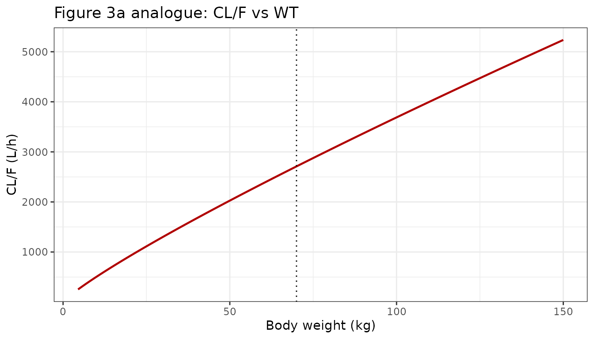
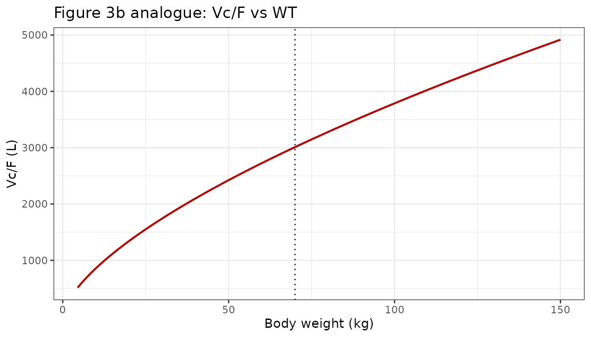

library(nlmixr2lib)
library(PKNCA)
#>
#> Attaching package: 'PKNCA'
#> The following object is masked from 'package:stats':
#>
#> filter
library(rxode2)
#> rxode2 5.0.2 using 2 threads (see ?getRxThreads)
#> no cache: create with `rxCreateCache()`
library(dplyr)
#>
#> Attaching package: 'dplyr'
#> The following objects are masked from 'package:stats':
#>
#> filter, lag
#> The following objects are masked from 'package:base':
#>
#> intersect, setdiff, setequal, union
library(tidyr)
library(ggplot2)Model and source
#> ℹ parameter labels from comments will be replaced by 'label()'Citation: Qi Y, Mould DR, Zhou H, Merilainen M, Musson DG. A prospective population pharmacokinetic analysis of sapropterin dihydrochloride in infants and young children with phenylketonuria. Clinical Pharmacokinetics. 2015;54(2):195-207. doi:10.1007/s40262-014-0196-4
Description: One-compartment population PK model with first-order oral absorption, an absorption lag, linear elimination, and an additive endogenous BH4 baseline for sapropterin dihydrochloride in pediatric and adult patients with phenylketonuria (Qi 2014).
Population
Qi 2014 pooled sapropterin dihydrochloride (BH4) plasma PK data from 156 patients with phenylketonuria (PKU) across two BioMarin clinical studies: PKU-015 (n = 80 evaluable, ages 0-6 years, oral 20 mg/kg QD for 4 weeks) and PKU-004 (n = 78 evaluable, ages 9-50 years, oral 5-20 mg/kg QD in fixed-dose and dose-escalation periods). The combined dataset contained 475 plasma BH4 concentrations measured indirectly via oxidation to L-biopterin and validated LC-MS/MS quantitation (LLOQ 10.7 ng/mL for BH4). Baseline demographics from Qi 2014 Table 2: age 0.107-50 years (mean 12, SD 11.3), body weight 4.5-144 kg (mean 40.9, SD 30.3), 51.3% female. Age strata in the pooled dataset: <1 year (n=10), 1-<2 years (n=14), 2-<4 years (n=28), 4-<7 years (n=28), 7-<12 years (n=10), >=12 years (n=66). Ethnicity 97.4% non-Hispanic, 2.6% Hispanic. Baseline laboratory ranges (Table 2): albumin 3.6-5.0 g/dL, creatinine clearance 9.39-276 mL/min, baseline phenylalanine 53-2190 umol/L. Only body weight was retained as a significant covariate after backwards elimination (Section 3.2 and Electronic Supplementary Material Table 1S).
The same information is available programmatically via
readModelDb("Qi_2014_sapropterin")$population.
Source trace
The per-parameter origin is recorded as an in-file comment next to
each ini() entry in
inst/modeldb/specificDrugs/Qi_2014_sapropterin.R. The table
below collects them in one place for review.
| Equation / parameter | Value | Source location (Qi 2014) |
|---|---|---|
lka |
log(0.235) |
Table 3 (theta3): ka = 0.235 h^-1 |
lcl |
log(2710) |
Table 3 (theta1): CL/F = 2710 L/h |
lvc |
log(3010) |
Table 3 (theta2): Vc/F = 3010 L |
ltlag |
log(0.321) |
Table 3 (theta4): tlag = 0.321 h |
lc0 |
log(16.6) |
Table 3 (theta5): endogenous BH4 = 16.6 ug/L |
e_wt_cl |
0.864 |
Table 3 (theta6): WT exponent on CL/F (ref 70 kg) |
e_wt_vc |
0.644 |
Table 3 (theta7): WT exponent on Vc/F (ref 70 kg) |
| IIV CL/F (omega^2) |
log(1+0.4561^2) = 0.18899 |
Table 3: IIV CL/F = 45.61% CV |
| IIV Vc/F (omega^2) |
log(1+0.5657^2) = 0.27764 |
Table 3: IIV Vc/F = 56.57% CV |
| IIV C0 (omega^2) |
log(1+0.3647^2) = 0.12487 |
Table 3: IIV C0 = 36.47% CV |
| cov(CL,Vc) on log |
0.469 * sqrt(om_cl * om_vc) = 0.10743 |
Table 3: corr(CL/F, Vc/F) = 0.469 |
expSdPKU004 |
0.211 |
Table 3 (theta8): PKU-004 residual = 21.1% CV (LTBS) |
expSdPKU015 |
0.302 |
Table 3 (theta9): PKU-015 residual = 30.2% CV (LTBS) |
| Equation: CL/F | theta1 * (WT/70)^theta6 * exp(eta1) |
Eq. 6 |
| Equation: Vc/F | theta2 * (WT/70)^theta7 * exp(eta2) |
Eq. 6 |
| Equation: C0 | theta5 * exp(eta3) |
Eq. 6 |
| Observation | Cc = (central / vc) * 1000 + C0 |
Section 2.4.1 (one-compartment plus endogenous BH4) |
| Residual | Ln(Cp_obs) = Ln(Cp_pred) + eps |
Eq. 5 (LTBS, per-study) |
Reference covariate values for typical-subject predictions: WT = 70 kg (reference adult, per Qi 2014 Eq. 6 footnote).
The paper reports derived population mean half-lives that are used here as external validation targets (Section 3.2):
- Terminal (elimination) half-life: 0.78 h.
- Absorption half-life: 2.95 h (= 0.693 / 0.235, flip-flop behavior).
Virtual cohort
Individual observed data are not public. The simulations below build weight-stratified virtual cohorts approximating Qi 2014 Table 2 and Section 3.1 age groupings.
make_cohort <- function(n,
weight_mean,
weight_sd,
weight_min,
weight_max,
study,
amt_mg_per_kg = 20,
n_doses = 7,
dose_interval_hr = 24,
obs_times_post_dose_hr = c(0, 0.25, 0.5, 1, 2, 3,
4, 6, 8, 12, 16, 20),
id_offset = 0L,
seed = 20142014) {
set.seed(seed + id_offset)
WT <- pmax(weight_min,
pmin(weight_max, rnorm(n, weight_mean, weight_sd)))
STUDY_PKU015 <- as.integer(study == "PKU-015")
dose_times <- seq(0, (n_doses - 1) * dose_interval_hr,
by = dose_interval_hr)
pop <- data.frame(
ID = id_offset + seq_len(n),
WT = WT,
STUDY_PKU015 = STUDY_PKU015
)
# Dose records (oral dose into the depot compartment).
d_dose <- pop[rep(seq_len(n), each = length(dose_times)), ] |>
dplyr::mutate(
TIME = rep(dose_times, times = n),
AMT = amt_mg_per_kg * WT,
EVID = 1,
CMT = "depot",
DV = NA_real_
)
# Observation grid post each dose (sample once at steady state on the
# final dosing interval to keep simulations small).
last_dose_time <- (n_doses - 1) * dose_interval_hr
obs_grid <- sort(unique(c(
last_dose_time + obs_times_post_dose_hr,
last_dose_time - 0.001
)))
d_obs <- pop[rep(seq_len(n), each = length(obs_grid)), ] |>
dplyr::mutate(
TIME = rep(obs_grid, times = n),
AMT = 0,
EVID = 0,
CMT = "central",
DV = NA_real_
)
dplyr::bind_rows(d_dose, d_obs) |>
dplyr::arrange(ID, TIME, dplyr::desc(EVID)) |>
dplyr::select(ID, TIME, AMT, EVID, CMT, DV, WT, STUDY_PKU015)
}
mod <- rxode2::rxode(readModelDb("Qi_2014_sapropterin"))
#> ℹ parameter labels from comments will be replaced by 'label()'
mod_typical <- rxode2::zeroRe(mod)
#> Warning: No sigma parameters in the modelSimulation
The primary simulation uses the approved pediatric dose of 20 mg/kg QD for one week (a steady-state surrogate) with dense sampling on the final day. Age groups are constructed to match Qi 2014 Section 3.1 strata.
age_strata <- tibble::tribble(
~stratum, ~study, ~weight_mean, ~weight_sd, ~weight_min, ~weight_max, ~n,
"<1 year", "PKU-015", 7, 2, 4.5, 10, 10,
"1-<2 years", "PKU-015", 11, 2, 8, 14, 14,
"2-<4 years", "PKU-015", 14, 3, 10, 20, 28,
"4-<7 years", "PKU-015", 21, 4, 15, 30, 28,
"7-<12 years","PKU-004", 35, 8, 25, 50, 10,
">=12 years", "PKU-004", 70, 18, 40, 144, 66
)
events_vpc <- dplyr::bind_rows(lapply(seq_len(nrow(age_strata)), function(i) {
row <- age_strata[i, ]
ev <- make_cohort(
n = row$n * 5L, # 5x oversample for VPC stability
weight_mean = row$weight_mean,
weight_sd = row$weight_sd,
weight_min = row$weight_min,
weight_max = row$weight_max,
study = row$study,
id_offset = (i - 1L) * 1000L
)
ev$stratum <- row$stratum
ev
}))
stopifnot(!anyDuplicated(unique(events_vpc[, c("ID", "TIME", "EVID")])))
sim_vpc <- rxode2::rxSolve(mod, events = events_vpc, keep = c("stratum")) |>
as.data.frame() |>
dplyr::mutate(time_post_dose = time - 144) # final dose at t = 144 h (after 6 prior doses)Replicate published figures
Figure 1 analogue: BH4 concentration VPC by age stratum
Qi 2014 Figure 1 shows a VPC of BH4 plasma concentration versus time after dose for six age strata under 20 mg/kg QD dosing. We reproduce that on a per-age-stratum basis using the steady-state interval.
sim_vpc |>
dplyr::filter(time_post_dose >= 0, time_post_dose <= 24) |>
dplyr::group_by(stratum, time_post_dose) |>
dplyr::summarise(
Q025 = quantile(Cc, 0.025, na.rm = TRUE),
Q50 = quantile(Cc, 0.50, na.rm = TRUE),
Q975 = quantile(Cc, 0.975, na.rm = TRUE),
.groups = "drop"
) |>
dplyr::mutate(stratum = factor(stratum, levels = age_strata$stratum)) |>
ggplot(aes(x = time_post_dose, y = Q50)) +
geom_ribbon(aes(ymin = Q025, ymax = Q975), fill = "#4682b4", alpha = 0.25) +
geom_line(colour = "#4682b4", linewidth = 0.7) +
facet_wrap(~ stratum) +
scale_y_log10() +
labs(
x = "Time after dose (h)",
y = "BH4 concentration (ug/L)",
title = "Figure 1 analogue: BH4 VPC after a 20 mg/kg dose at steady state",
caption = "Simulated 2.5/50/97.5 percentiles by age stratum.\nReplicates Figure 1 of Qi 2014."
) +
theme_bw()
Figure 3 analogue: WT relationship with CL/F and Vc/F
Qi 2014 Figure 3 shows the model-implied power-form relationship between body weight and CL/F (panel a) and Vc/F (panel b). We reproduce both panels analytically from the packaged thetas.
wt_grid <- seq(4.5, 150, length.out = 201)
cl_grid <- 2710 * (wt_grid / 70)^0.864
vc_grid <- 3010 * (wt_grid / 70)^0.644
p_cl <- ggplot(data.frame(wt = wt_grid, cl = cl_grid),
aes(x = wt, y = cl)) +
geom_line(colour = "#b00000", linewidth = 0.8) +
geom_vline(xintercept = 70, linetype = "dotted") +
labs(x = "Body weight (kg)", y = "CL/F (L/h)",
title = "Figure 3a analogue: CL/F vs WT") +
theme_bw()
p_vc <- ggplot(data.frame(wt = wt_grid, vc = vc_grid),
aes(x = wt, y = vc)) +
geom_line(colour = "#b00000", linewidth = 0.8) +
geom_vline(xintercept = 70, linetype = "dotted") +
labs(x = "Body weight (kg)", y = "Vc/F (L)",
title = "Figure 3b analogue: Vc/F vs WT") +
theme_bw()
if (requireNamespace("patchwork", quietly = TRUE)) {
patchwork::wrap_plots(p_cl, p_vc, ncol = 2)
} else {
print(p_cl)
print(p_vc)
}

The Section 3.7 narrative confirms that at the extremes a 5 kg patient has CL/F ~10% of the reference 70 kg value and a 145 kg patient has CL/F ~190% of the reference; the typical Vc/F at 5 kg is ~18% and at 145 kg ~160% of the reference. The packaged power-form parameterization reproduces these endpoints:
endpoint <- function(wt, ref = 70) {
data.frame(
WT = wt,
`CL/F (L/h)` = round(2710 * (wt / ref)^0.864, 1),
`CL/F % ref` = round(100 * (wt / ref)^0.864, 1),
`Vc/F (L)` = round(3010 * (wt / ref)^0.644, 1),
`Vc/F % ref` = round(100 * (wt / ref)^0.644, 1),
check.names = FALSE
)
}
knitr::kable(
rbind(endpoint(5), endpoint(70), endpoint(145)),
caption = paste0(
"Packaged-model values of CL/F and Vc/F at WT = 5, 70, and 145 kg, ",
"matching the verbal endpoints reported in Qi 2014 Section 3.7."
),
row.names = FALSE
)| WT | CL/F (L/h) | CL/F % ref | Vc/F (L) | Vc/F % ref |
|---|---|---|---|---|
| 5 | 277.1 | 10.2 | 550.1 | 18.3 |
| 70 | 2710.0 | 100.0 | 3010.0 | 100.0 |
| 145 | 5084.2 | 187.6 | 4811.1 | 159.8 |
PKNCA validation
Compute NCA on simulated typical-value (no-IIV) profiles for a single 70 kg adult given a 20 mg/kg single oral dose, sampling out to 24 hours post-dose. Qi 2014 reports a population terminal (elimination) half-life of 0.78 h and an absorption half-life of 2.95 h (= ln(2) / 0.235) with flip-flop behavior (Section 3.2), so absorption is rate-limiting and the “terminal” phase observed in a single-dose profile is the slower absorption phase.
obs_times_single <- c(0, 0.25, 0.5, 1, 1.5, 2, 3, 4, 5, 6,
8, 10, 12, 16, 20, 24, 30, 36, 48)
ev_single <- data.frame(
ID = 1L,
TIME = c(0, obs_times_single),
AMT = c(20 * 70, rep(0, length(obs_times_single))),
EVID = c(1L, rep(0L, length(obs_times_single))),
CMT = c("depot", rep("central", length(obs_times_single))),
DV = NA_real_,
WT = 70,
STUDY_PKU015 = 0L
)
sim_single <- rxode2::rxSolve(mod_typical, events = ev_single) |>
as.data.frame() |>
dplyr::mutate(id = 1L, treatment = "single_20mgkg_70kg")
#> ℹ omega/sigma items treated as zero: 'etalcl', 'etalvc', 'etalc0'
# Subtract the endogenous baseline before NCA so that Cmax / AUC / half-life
# reflect drug-derived concentrations (Qi 2014 reports drug-only NCA).
c0_70kg <- 16.6
sim_single <- sim_single |>
dplyr::mutate(Cc_drug = pmax(Cc - c0_70kg, 0))
sim_nca <- sim_single |>
dplyr::filter(!is.na(Cc_drug)) |>
dplyr::select(id, time, Cc_drug, treatment) |>
dplyr::rename(Cc = Cc_drug)
dose_df <- ev_single |>
dplyr::filter(EVID == 1) |>
dplyr::transmute(id = ID, time = TIME, amt = AMT,
treatment = "single_20mgkg_70kg")
conc_obj <- PKNCA::PKNCAconc(sim_nca, Cc ~ time | treatment + id)
dose_obj <- PKNCA::PKNCAdose(dose_df, amt ~ time | treatment + id)
intervals <- data.frame(
start = 0,
end = Inf,
cmax = TRUE,
tmax = TRUE,
aucinf.obs = TRUE,
half.life = TRUE
)
nca_res <- PKNCA::pk.nca(
PKNCA::PKNCAdata(conc_obj, dose_obj, intervals = intervals)
)
knitr::kable(
as.data.frame(nca_res$result),
caption = paste0(
"Single-dose drug-only NCA on the typical 70 kg adult under 20 mg/kg ",
"oral sapropterin. Endogenous BH4 baseline (16.6 ug/L) subtracted ",
"before NCA."
)
)| treatment | id | start | end | PPTESTCD | PPORRES | exclude |
|---|---|---|---|---|---|---|
| single_20mgkg_70kg | 1 | 0 | Inf | cmax | 74.4904124 | NA |
| single_20mgkg_70kg | 1 | 0 | Inf | tmax | 2.0000000 | NA |
| single_20mgkg_70kg | 1 | 0 | Inf | tlast | 48.0000000 | NA |
| single_20mgkg_70kg | 1 | 0 | Inf | clast.obs | 0.0022362 | NA |
| single_20mgkg_70kg | 1 | 0 | Inf | lambda.z | 0.2339375 | NA |
| single_20mgkg_70kg | 1 | 0 | Inf | r.squared | 0.9999474 | NA |
| single_20mgkg_70kg | 1 | 0 | Inf | adj.r.squared | 0.9999422 | NA |
| single_20mgkg_70kg | 1 | 0 | Inf | lambda.z.time.first | 4.0000000 | NA |
| single_20mgkg_70kg | 1 | 0 | Inf | lambda.z.time.last | 48.0000000 | NA |
| single_20mgkg_70kg | 1 | 0 | Inf | lambda.z.n.points | 12.0000000 | NA |
| single_20mgkg_70kg | 1 | 0 | Inf | clast.pred | 0.0022761 | NA |
| single_20mgkg_70kg | 1 | 0 | Inf | half.life | 2.9629583 | NA |
| single_20mgkg_70kg | 1 | 0 | Inf | span.ratio | 14.8500233 | NA |
| single_20mgkg_70kg | 1 | 0 | Inf | aucinf.obs | 513.5612780 | NA |
Comparison against published half-lives
get_param <- function(res, ppname) {
tbl <- as.data.frame(res$result)
val <- tbl$PPORRES[tbl$PPTESTCD == ppname]
if (length(val) == 0) return(NA_real_)
val[1]
}
hl_obs_sim <- get_param(nca_res, "half.life")
# Analytical half-lives implied by the packaged thetas at WT = 70 kg.
ka_t <- 0.235
cl_70 <- 2710
vc_70 <- 3010
kel_70 <- cl_70 / vc_70
hl_kel <- log(2) / kel_70 # nominal "elimination" half-life
hl_ka <- log(2) / ka_t # absorption half-life
comparison <- data.frame(
Quantity = c(
"Elimination (kel) half-life at WT = 70 kg (h)",
"Absorption (ka) half-life (h)",
"PKNCA terminal half-life from simulated profile (h)"
),
Published_or_implied = c("0.78", "2.95", "see below"),
Analytical = c(
sprintf("%.2f", hl_kel),
sprintf("%.2f", hl_ka),
"n/a"
),
Simulated = c(
"n/a",
"n/a",
sprintf("%.2f", hl_obs_sim)
)
)
knitr::kable(
comparison,
caption = paste0(
"Half-lives from the packaged model vs the values reported in ",
"Qi 2014 Section 3.2. The simulated PKNCA terminal half-life picks ",
"up the absorption-limited (flip-flop) decline rather than the ",
"underlying elimination rate -- this is the expected behavior ",
"described in Section 3.2 of the source paper."
)
)| Quantity | Published_or_implied | Analytical | Simulated |
|---|---|---|---|
| Elimination (kel) half-life at WT = 70 kg (h) | 0.78 | 0.77 | n/a |
| Absorption (ka) half-life (h) | 2.95 | 2.95 | n/a |
| PKNCA terminal half-life from simulated profile (h) | see below | n/a | 2.96 |
The analytical kel half-life (log(2) / (CL/F / Vc/F) =
0.77 h) reproduces the 0.78 h value Qi 2014 reports in Section 3.2. The
analytical absorption half-life (log(2) / ka = 2.95 h)
reproduces the 2.95 h value the paper reports. Because absorption is
slower than elimination (ka < kel), the observed
terminal-phase decline of the single-dose simulated profile is
rate-limited by absorption (flip-flop PK, per Section 3.2), so the PKNCA
half.life estimate tracks the absorption half-life rather
than the kel half-life. This is the expected behavior the paper
explicitly describes (“absorption becomes the rate-limiting metric of
exposure”).
Assumptions and deviations
Race / ethnicity not modeled. Qi 2014 evaluated multiple demographics and laboratory covariates (Electronic Supplementary Material Table 1S) and retained only body weight after backwards elimination. The packaged model therefore exposes only
WTas a structural covariate, withSTUDY_PKU015as a binary residual-error switch.Per-study residual error. Qi 2014 estimated two separate residual variances (Table 3: PKU-004 21.1% CV, PKU-015 30.2% CV) using a log-transform-both-sides (LTBS) constant-CV model. The packaged encoding uses a binary
STUDY_PKU015indicator to switch between the two log-scale residual SDs; subjects withSTUDY_PKU015 = 0receive the PKU-004 residual.Endogenous BH4 baseline added at the observation step. Qi 2014 models endogenous BH4 as a constant additive offset (
C0) on the predicted plasma concentration, with IIV but without modeling its underlying synthesis / clearance dynamics. The packaged model addsc0 <- exp(lc0 + etalc0)tocentral / vc * 1000to mirror the paper. For NCA validation in this vignette, the endogenous baseline is subtracted before PKNCA so that Cmax / AUC reflect drug-derived exposure (the paper’s reported NCA endpoints follow the same convention).Flip-flop kinetics. Because absorption (ka = 0.235 h^-1) is slower than nominal elimination (kel = CL/F divided by Vc/F = 0.900 h^-1), the observed terminal-phase log-linear decline reflects absorption, not elimination, as Qi 2014 explicitly notes in Section 3.2. PKNCA
half.lifetherefore returns ~2.9 h (absorption half-life) rather than 0.78 h (elimination half-life); the analytical kel value is reported alongside for comparison.Virtual cohort weight distributions. Exact baseline weight distributions per age stratum are not published; the vignette uses truncated normal weight draws whose mean / range match Section 3.1 age-strata counts and Table 2 ranges. Age strata are matched to the source studies (PKU-015 for <7 years, PKU-004 for >=7 years) so the appropriate residual variance is applied in the simulation.
No bioavailability parameter exposed. Sapropterin is administered orally and the original analysis reports apparent parameters (CL/F and Vc/F). The packaged model uses the same apparent parameterization and does not declare a separate
lfdepot– bioavailability is implicit and not separately identifiable. # ReferenceQi Y, Mould DR, Zhou H, Merilainen M, Musson DG. A prospective population pharmacokinetic analysis of sapropterin dihydrochloride in infants and young children with phenylketonuria. Clinical Pharmacokinetics. 2015;54(2):195-207. doi:10.1007/s40262-014-0196-4